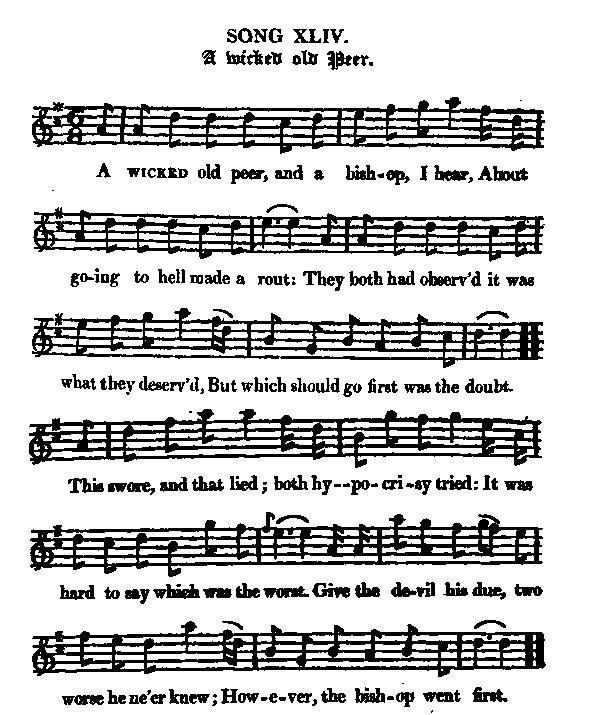
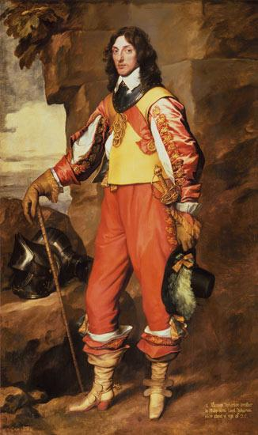

A wicked old Peer
Un vilain vieux Pair
Thomas Wharton (1648 - 1715)
Tune - Mélodie"A wicked old Peer"
from Hogg's "Jacobite Reliques" part 1, N°44
Sequenced by Christian Souchon

|
"This is a very clever and shrewd old song, on the same subject with
the last
. It has been a constant amusement with our Jacobite song-makers to send the most obnoxious of their opponents to hell, and give some account of their treatment there, as abundantly appears in the course of this work. When they could get no other amends of them, they kept that behind as a corps-de-reserve, or rather as a forlorn hope: seeming to feel for them exactly as the old mariner did toward the deceased gentleman who had left his estate wrongously, as he supposed, and cut off the right heir, his nephew, with a shilling: " The old gentleman's in hell, that's some comfort!"
Source "Hogg's Jacobite Relics". A few "Whigs in hell" Jacobite songs - Bishop Burnet (Sarum) - Thomas Wharton - Cumberland - Murray and Cumberland - Crookieden - A song to the tune 'Clout the Caldron' |
"Ceci est un vieux chant, plein d'esprit et de subtilité. Il s'apparente par le sujet au
précédent
. C'était une plaisanterie fort prisée des chansonniers Jacobites que d'envoyer en enfer leurs plus odieux adversaires et de raconter leurs tribulations, - ce recueil en donne d'abondants exemples -, à défaut de pouvoir les faire pâtir d'une autre manière. C'était pour eux une sorte de "corps-de-réserve" ou plutôt d'exorcisme. Leurs sentiments étaient ceux du vieux marin de l'histoire vis à vis du gentilhomme décédé qui avait, pensait-il, mal disposé de son héritage et en avait exclu son neveux, le légitime successeur, en lui laissant un shilling. "Consolons-nous, disait-il, en pensant qu'il est en enfer!"
Source "The Fiddler's Companion" (cf. liens). Quelques chants Jacobites de "Whigs en enfer" - Bishop Burnet (Sarum) - Thomas Wharton - Cumberland - Murray et Cumberland - Crookieden - Chant sur l'air de 'Clout the Caldron' |

|
A WICKED OLD PEER
1. A wicked old peer, [1] and a bishop, I hear, [2] About going to hell made a rout: They both had observ'd it was what they deserv'd, But which should go first was the doubt. This swore and that lied; both hypocrisy tried: It was hard to say which was the worst. Give the devil his due, two worse he ne'er knew; However, the bishop went first. (twice) 2. Affronted in hell, and what I cannot tell, He sat musing, ne'er open'd his mouth, Until the bright marquis, who now in the dark is, As usual, began with an oath. " Damn you, Old Nick, we'll shew you a trick! " We monarchy always have hated: " We both will disown your right to the crown, " And swear that you have abdicated." 3. " Right, Marquis of Wharton, 'tis what I just thought on; " His title neither you nor I know: " It would be a fine thing if he's made a king; " I'm sure it's not jure divino ." But straightway the devil, grown wondrous civil At the saying of each hopeful imp, Cried, " Hold up your faces, you both shall have places; " Sarum's porter, and Wharton's my pimp." 4. Then they bow'd, and went on, and whisper'd the throng, " Now we're in, of the same we'll make use; " We'll maul the old whelp, if you'll lend us your help: " Who knows but all hell may break loose?" But Wharton did say, " If we can't get away, " For one thing we give you our words; " Here will be, by-and-by, with Sarum and I, " Two-thirds of the bishops and lords. 5. " With these helps we hope, spite of devil and pope, " If the honest damn'd would but come over, " My friend's zeal and mine for the Protestant line " Might bring in the house of Hanover. " For where they reign now, you all must allow, " Though back'd by this true Christian juror, " Their right to the throne is not half so well pro'en ; " But, once here, my friends hoc securior ." Source: "The Jacobite Relics of Scotland, being the Songs, Airs and Legends of the Adherents to the House of Stuart" collected by James Hogg, published in Edinburgh by William Blackwood in 1819. |
UN VILAIN VIEUX PAIR
1. Partant pour l'enfer Certain vilain vieux Pair [1] Et un évêque [2] se disputaient Chacun est d'accord Qu'il mérite ce sort Mais passer le premier nul ne veut. L'on jure, l'on ment L'on fait de faux serments. Qui d'entre eux sera le plus odieux? Le diable n'eut jamais De pareils damnés! Et l'évêque entra, premier des deux. (bis) 2. L'enfer l'agonit D'injures, de lazzis. Qui le laissèrent interloqué. Le brillant marquis, Entre aussi dans la nuit, Mais, en jurant, comme un charretier: "O Satan maudit Prend garde, nous voici! Les monarchies nous les haïssons. Nous allons t'ôter Ton droit à régner En prétextant ton abdication." 3. "Wharton, cher marquis, Moi, j'y pensais aussi. Quel est donc son titre, s'il existe? Il est bon ma foi Que l'on en fasse un roi; Mais non pas de droit divin, j'insiste." Alors Lucifer Rendu tout débonnaire Par leurs discours pleins d'autorité, Cria: "levez les yeux, Je vous fais tous deux Wharton, sous-maître et Sarum (=Burnet) , portier!" 4. Ils s'inclinent bien bas, Chuchotant à mi-voix: "Etant dans la place, nous allons Secouer le vieux Chien Avec votre soutien, Et l'enfer, qui sait, rompra ses gonds." Wharton rétorqua: "Si l'on n'y parvient pas, Jurons de nous employer alors A faire entrer ici Petit à petit Deux tiers des évêques et des lords. 5. "Et nous aurons raison Du pape et du démon, Grâce à tous ces honnêtes damnés Et tous deux aimons tant Les princes protestants Qu'ici Hanovre est sûr de régner. Car chez les vivants Oui, convenez-en! Malgré tes serments, dévoué Chrétien, Leur titre à régner Reste encore à prouver: Ici l'on ne leur demande rien!" (Trad. Christian Souchon(c)2009) |
|
[1]
Thomas Wharton Wharton
, 1st marquess of 1648-1715, English politician. Before his entry into Parliament (1673) he had acquired the reputation as a rake and gambler that he retained for life. After 1679 he became active in Whig politics, supporting the attempt to exclude the duke of York (later James II) from the succession. He composed the words of the popular satirical ballad
"Lilliburlero"
(set to music by Henry Purcell), with which, he boasted, he sang James II out of his kingdom in 1688. William III made Wharton a privy councillor and comptroller of the household (1689). Queen Anne removed him because of her personal dislike and distrust of him on religious grounds, but he remained one of the powerful Whig politicians. He was a commissioner for the union with Scotland, was created (1706) earl, and served as lord lieutenant of Ireland (1708-10). George I made him lord privy seal (1714) and a marquis (1715).
[2] Bishop Burnet Source: www.encyclopedia.com |
 [1] Thomas, 1er Marquis de Wharton (1648 - 1715), politicien anglais. A son entrée au parlement (1673) il avait déjà une solide réputation de débauché et de joueur qu'il conserva toute sa vie. A compter 1679 il s'engagea activement dans la politique au côté des Whigs et usa de toute son influence pour exclure le Duc d'York (futur Jacques II) de la succession. On lui doit les paroles du fameux "Lilliburlero" (mis en musique par Henri Purcell), par lequel il se flattait d'avoir sonné son éviction du trône en 1688. Guillaume III en fit un conseiller privé et le contrôleur du palais (1689). La Reine Anne le renvoya par antipathie et méfiance envers ses antécédents religieux, mais il n'en resta pas moins un politicien Whig influent. Ce fut un des Commissaires chargés de préparer l'union avec l'Ecosse. Il fut créé comte en 1706 et devint Lord lieutenant du roi en Irlande de 1708 à 1710. Georges I le fit lord dans la pairie d'Irlande en 1714 et marquis dans celle d'Angleterre en 1715., [2] l'Evêque Burnet Source: www.encyclopedia.com |
|
|
|